Wellcome Data, Ontologies, and Data Architecture (UDA)
Jeff Uren ★ 2026-07-06
WARNING: This article contains some graphic descriptions of human suffering. If you are sensitive to that, please skip the "Some personal background" section. It adds weight to what we're doing, but it's not wholly necessary to understand the technical content herein.
This is gonna be a bit of a long post. I apologize for that up front, but I'm going to take you on a bit of a journey (with pictures). The important thing isn't necessarily the technical details, it's the outcomes we're driving towards at the end, and what all this work, and thought will enable for Wellcome around data as a whole and potentially more widely.
I'm going to hold your hand through some gnarly things that will feel a little simple at first, and then really complex complex fast, but I promise you, they have purpose. We're going to get more and more complicated, but hold out until the end for the big payouts. Let me cook.
The thing I'm describing below isn't just a data model, a metadata catalogue, or another diagram someone has to keep alive for audit season. It's an attempt to build something more useful than that: a shared, operational description of the concepts that matter to Wellcome, how they hang together, and how real recorded values in our data platform connect back to them.
At the start of DataOps (my team), we were trying to solve much more immediate problems than described here. We needed better orchestration, better pipelines, better primitives for rapidly building and maintaining data pipelines, and better ways of turning messy operational data into something people could actually use and trust, all at a reasonable cost point.
Now that those things are stabilizing, there are a number of recurring problems that are rooted in a fundamental, foundational problem that Wellcome suffers from that we need to address: if we don't know what our data means, then all the engineering and analysis in the world only helps us move uncertainty around faster.
Some personal background
I don't particularly like talking about myself, but as I get older, I find myself having to do it more and more in order to make myself heard. People only hear you if you can claim experience outright in a way that engages them and breaks through to their conscious. In this case it's worth setting the stage for why I take data as seriously as I do.
Years before this place, I spent a long time working in disease surveillance and outbreak management systems with the WHO and UNHCR across parts of Africa, the Middle East, and the Pacific. At the height of it, I was coordinating data and work across ~20 countries, dozens of organisations, and thousands of people on the ground.
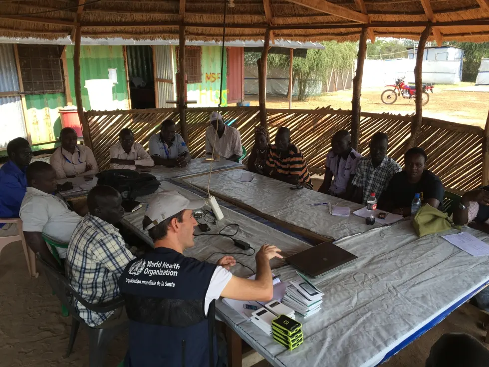
That sort of work gives you a fairly low tolerance for data theatre, you learn fast that a chart isn't automatically insight, form fields aren't automatically truth, and sometimes it's easier to write the numbers on a piece of paper and carry it across a river than to try and get a mobile signal to submit a form. Easier to drive hours and hours to transcribe a remote clinics paper records into a spreadsheet than to spend months negotiating with the local telecom.
In that world, you also learn very quickly that the important questions are usually super awkward and specific. Things like:
- What does "suspected case" mean?
- Who recorded it?
- Where was it recorded?
- What location does it refer to?
- When did the symptoms start?
- When was the case reported?
- Has this person already been counted somewhere else?
Is this an actual increase in cases? Or did reporting just improve because someone finally got mobile signal, a top-up on their data plan, fuel, a laptop charger, or five quiet minutes in a tent?
That whole world makes something painfully clear: data is representation, not reality. It's value is only useful if you understand what piece of reality it claims to represent. At it's most severe, a data point can't convey the anguish a man feels having to push his heavily pregnant, bleeding wife in a wheelbarrow for miles and miles, to get her to a clinic only to have her die half a mile before they get there. It can't communicate the despair of a mother watching her child wracked with pain from a wholly preventable disease because the local clinic has no vaccines, or because the supply chain has broken down, or because data didn't predict that a vaccine shortage was coming, or that a disease outbreak was imminent, or understand that a particular community was at risk because of a combination of factors that no single data point could ever represent.
All of this isn't just a humanitarian or public health problem, it's a data problem. It's the same class of problem that you'll see in any organisation, just with a lot less dramatic consequences. For Wellcome, the consequences are usually not life and death, but they're still very real. They're the difference between a researcher getting the funding they need to do their work, or not. They're the difference between a patient getting the right treatment, or not. They're the difference between a team being able to make a decision, or not.
Values on their own don't really mean a whole lot though. They need to be tied back to something they claim to describe. A way of making meaning explicit, so that when people query, analyse, govern, build, automate, or question that data, they are standing on something firmer than just column names, simple metadata, and inherited assumptions.
I take data very seriously, as a byproduct of knowing for years, every morning when I woke up, how many children had died from preventable diseases in every little village, community, refugee camp, and clinical position across some of the hardest hit places in the world. I had alerts wired directly to my phone. That seriousness comes from having slept on gurneys in war-torn clinics, while gunfire is rattling the walls in order to get it. From standing in clinics where the only way to get a child vaccinated was to carry them across an infested river, or seen a child suffering from Measles in the stifling heat of a refugee camp clinic. Meeting children whose bellies are so full of worms that you can see them wriggling under their distended skin. Watching people wade through disease-infested waters to get to food, and seeing the consequences of not having the right data to make the right decisions.
So what is data?
Before we can start down our wider journey, we need to establish a ground plane. I've already done a lot of talking about data in very emotional terms but I've not done a lot to agree on what data actually is.
We're going to be coming at data from a few different perspectives, so I want us all to be on the same page, speaking the same dialect before we start into it. We have a tendency to label a lot of things "data" that aren't, or to overload the term with so many different meanings that it becomes almost useless.
1 — Data is representation, not the thing itself
It's a recorded value that stands in for some real-world fact, entity, or event.
2 — Data requires three ingredients
Like fire (air, fuel, and heat), data requires three primary aspects in order to exist:
- An attribute — what's being described
- An entity or event — what it belongs to
- A value — the recorded state (usually at some point in time)
3 — Data only has meaning in relation to reality
A number or symbol isn't "data" until it's tied to something it's meant to represent.
4 — Quality
And finally, a good rule to remember is that data quality is really a question of correspondence. It's how well the recorded value matches the real-world state that it claims to reflect.
That's our definition of data moving forward. You can use it too if you want. I won't complain.
Things
If data is representation, then the next logical question isn't "where is the table?" or "what is the column called?".
It's:
What is being represented?
Before we talk about sources, fields, mappings, projections, APIs, query engines, governance, or AI, we need to start with the smallest useful piece of the world that we're trying to build.
A thing.
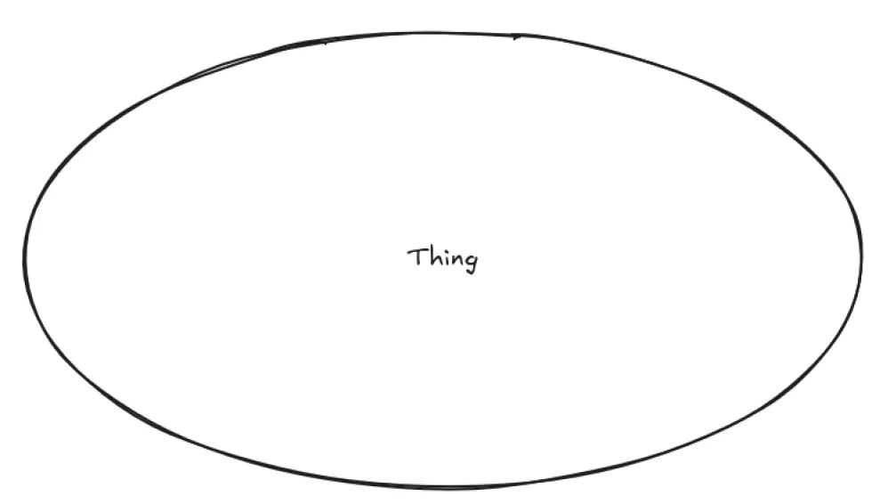
Some part of reality that matters enough for the organisation to record something about it.
That thing could be a funded grant. It might be an application. It might be an organisation, transaction, a person, a project, a payment, a scheme, an event, or any number of other things Wellcome needs to understand.
We don't care where the data lives, or which system produces it, whether it's in postgres, parquet, workday, oracle, or someone's terrifying spreadsheet named "final_final_v7_really_final-records-2026-07-04.xlsx".
We need to ask a more basic question:
What kind of thing is this, and what do we know about it?
That's our first doorway, we start with a thing, then we ask what attributes describe that thing, then we ask how those things relate to other things, on to what values, in which sources claim to represent those attributes, driving towards how we map, govern, query, project, and make those things useful.
So we start here at a "thing", a Concept. Some entity or event, slightly amorphous at the moment.
Concepts & Attributes
At first, that thing is deliberately vague. It's just a blob of meaning. Something in the world that we care about.
But blobs are not very useful for long, so we need to give it a name. In our system we named that thing a DirectClass.
A DirectClass represents a concept that matters to the organisation. Something like:
- Funded Grant
- Application
- Worker
- Organisation
- Payment
- Funding Scheme
A DirectClass isn't a table, it's not a row, not a dashboard object, not a source system entity, although it may be represented in one or more source systems.
A DirectClass is our agreed description of a kind of thing that exists in the world of Wellcome.
So when we say `FundedGrant` we're not saying:
"There is a table called funded_grants."
We're saying:
"There is a meaningful organizational concept called Funded Grant, and we need a way to describe it consistently."
Once we have a DirectClass, the next question is pretty obvious:
What do we know about it?
This is where Attributes come into play.
An Attribute describes some property, characteristics, or recorded state that can belong to a DirectClass.
A Funded Grant might have:
- Awarded Amount
- Grant Reference
- Start Date
- End Date
- Application Status
- Lead Organisation
- Funding Scheme
- Currency
- Award Date
Again, these are not columns.
They might eventually map to columns. They might map to fields in parquet files, JSON structures, APIs, documents, or computed values. But at this point we're still not talking about physical storage.
We're talking about meaning.
An Attribute is a reusable concept in its own right.
In a normal data model, you might end up with `grant_id`, `application_grant_id`, `award_grant_id`, `finance_grant_reference`, and three other versions of more or less the same thing scattered across data tables.
Some of them could mean the same thing, some of them might not. Some of them may look the same until they quietly ruin your analysis.
We avoid that by making the Attribute explicit.
If `Grant Reference` is a meaningful attribute, then we define it once. We give it a name, a description, a type, ownership, sensitivity, and whatever other semantic information we need.
The DirectClasses can use it.
But an Attribute does not just float around near a DirectClass hoping someone understand the connection.
It's connected through a property relationship. The property relationship says:
"This DirectClass has this Attribute as one of the things that can describe it."
So we could say:
FundedGrant --hasProperty--> AwardedAmount
FundedGrant --hasProperty--> GrantReference
FundedGrant --hasProperty--> StartDate
FundedGrant --hasProperty--> LeadOrganisationIt tells us that `Awarded Amount` is not just some general idea. It's an Attribute that can describe a Funded Grant. It also means the same Attribute can be reused elsewhere, where it makes sense.
For example `Start Date` might describe a Funded Grant, a Project, a Contract, or an Employment Period. We don't need to invent a new `Start Date` every single time.
We need to understand if the same concept applies in each context, sometimes it will, sometimes it won't. That's exactly the type of conversation that our system is meant to force out into the open.
The property relationship gives us a clean structure:
DirectClass -> hasProperty -> AttributeOr, in more human terms:
A Funded Grant has an Awarded Amount.
A Funded Grant has a Grant Reference.
A Funded Grant has a Start Date.
A Funded Grant has a Lead Organisation.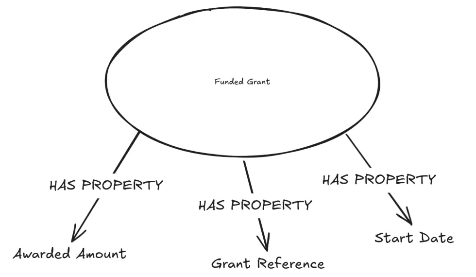
Still no values. At this stage we're not saying:
"This grant was awarded £1,000,000"
We are saying:
"A Funded Grant is the kind of thing that can have an Awarded Amount"
We're building a grammar of the world we care about, this might feel very childish, but it's very important to have strong foundations.
- DirectClasses give us the nouns.
- Attributes give us the properties.
Property relationships tell us which Attributes can describe which nouns.
Relationships
Things don't exist in isolation.
A Funded Grant may have a Lead Organisation, Transactions, Payments, Applications, People associated with it, it may belong to a Scheme, it may relate to Topics, Places, Partners, or any number of other concepts that matter to Wellcome.
That's where Relationships come in.
A Relationship describes how one DirectClass can be connected to another DirectClass.
Again, we're not talking about joins. We're not saying:
`funded_grant.grant_id == transaction.grant_id`
That comes later, right now we're saying something more conceptual:
FundedGrant --hasPayment--> Transaction
FundedGrant --hasLeadOrganisation--> Organisation
FundedGrant --originatedfrom--> Application
FundedGrant --submittedBy--> OrganisationThe relationship gives a name to the connection between two concepts, that name is important.
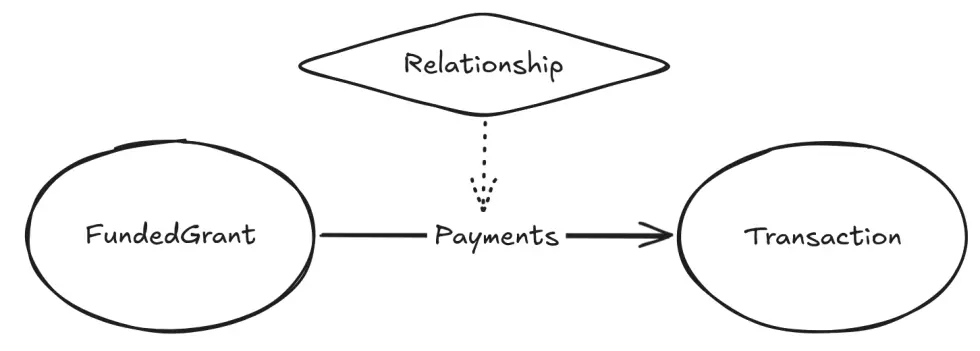
A FundedGrant might relate to a Transaction in more than one way, one relationship might be called `Payments` and another might be called `Refunds`. Both could connect the same two DirectClasses, but they do not mean the same thing.
So Relationships are a first-class citizen in our world. If we can describe the Relationship, we can later decide how that relationship is materialized from source data. A data model usually starts with structure, our system differs in that it starts with meaning, the structure comes after.
Enumerations
Some Attributes can take almost any value, an Awarded Amount might be any valid monetary amount, a start date might be any valid date, a grant reference might be any valid identifier.
We have to recognize that some Attributes are kind of different. A good example is `Application Status`, which has a finite set of discrete values:
- Awarded
- Rejected
- Withdrawn
- In Review
- Draft
- Submitted
That controlled set is an Enumeration.
An Enumeration defines the list of permitted values for a particular kind of Attribute. This gives us a way to make meaning extremely explicit. Without an Enumeration, status values tend to drift and morph in weird ways:
- One system says `Awarded`
- another `AWARDED`
- yet another `Successful`
- and yet another `Approved`
- still more just record `A`
- the worst just have `1`
Everyone insists their version is obvious until someone tries to combine them together. The Enumeration gives us a shared semantic set. It says:
"These are the meaningful values we recognize for this concept."
Enumeration Values
An Enumeration Value is one member of an Enumeration.
So if `Application Status` is the Enumeration, then `Awarded`, `Rejected`, and `Withdrawn` are Enumeration Values.
That sounds simple, but it's doing really really useful work.
Each Enumeration Value can have its own name, description, synonyms, mappings, and governance rules. That lets us distinguish between the value as it appears in the system it came from, and the value we understand in the world.
For example:
Source value: SUCCESSFUL World: Awarded
Source value: WDRN World: Withdrawn
Source value: RE3 World: RejectedThe source system can keep its own codes, our system holds the agreed meaning.
That means applications, query engines, generated APIs, projections, and AI tools do not have to guess whether `SUCCESSFUL`, `Approved`, and `Awarded` are the same thing. Our system can tell them, and it's not just about tidying up labels. It's preserving meaning. Something standard catalogues can't do.
Domains
We now have a few important pieces:
- DirectClass
- Attribute
- Property Relationship
- Relationship
- Enumeration
- Enumeration Value
But we still need somewhere to organise them. That's where Domains come forward. A Domain is a broad organisational bucket of meaning. Something like:
- Funding
- Finance
- People
- Digital & Technology
- Investments
- Climate & Health
A Domain gives us a way to group the concepts, attributes, relationships, and enumerations that belong to a particular part of Wellcome's world.
So `Funded Grant`, `Application`, `Scheme`, `Awarded Amount`, and `Application Status` might sit in the Funding Domain. Finance concepts would sit in the Finance Domain.
You get the point, but the point isn't to create rigid little kingdoms, the point is to give all of this meaning a home. These Domains help with ownership, governance, and aide in discovery.
They help people understand where a concept came from, who probably cares about it, and where to go when the definition needs to be challenged or improved.
But Domains don't prevent re-use, an Attribute definition in one Domain may still be useful in another. A DirectClass in one Domain may still relate to a DirectClass in another Domain.
A Funded Grant might belong mainly in Funding, but it might relate to Finance through Transactions, to Organisations through Lead Organisation, and to People through roles and responsibilities.
And that's OK.
Our system isn't trying to pretend the organisation is neatly divided into discrete little boxes. It's trying to give us a way to describe the boxes, the things inside them, and the relationships that cross between them.
So, at this point, the upper ontology has started to take shape. We have:
Domain
│
├── DirectClass
│ ├── hasProperty -> Attribute
│ └── hasRelationship -> DirectClass
│
├── Attribute
│ └── may use -> Enumeration
│
└── Enumeration
└── hasValue -> Enumeration ValueThere's still no recorded values, no source tables, no parquet files, no warehouse projections. We're still describing the conceptual shape of the world, but now we have enough structure to start to say useful things.
- We can say what kinds of things exist.
- We can say what properties describe them.
- We can say how they relate to each other.
- We can say which values are allowed for controlled attributes.
- We can say which part of the organisation owns or understands them best.
That's a huge foundation, once it comes into existence, we can start connecting it to real data.
DataMesh
We've been purposely avoiding value, and only talking about concepts. These are all useful, all necessary, but still slightly floating above the ground a bit.
- No files
- No tables
- No rows
- No columns
- No source systems
- No awkward legacy exports with mysterious field names and three different meanings hiding under one label.
We need to link our conceptual world to the physical world of recorded values and that's where the DataMesh comes in.
In our case, the DataMesh is the governed layer of real data produced by our pipelines. These are concrete datasets that exist in the platform: stored, versioned, typed, inspectable, and available for use.
A DataMesh dataset might contain funding records, transactions, HR records, finance records, application data, organisational data, or any number of other useful sets of recorded values.
That data is not part of our world. They're not the conceptual model, they're the physical evidence. They are where the recorded values live.
Our upper ontology gives us the language of meaning, the DataMesh gives us the stored values. Where it starts to get interesting is where we connect the two.
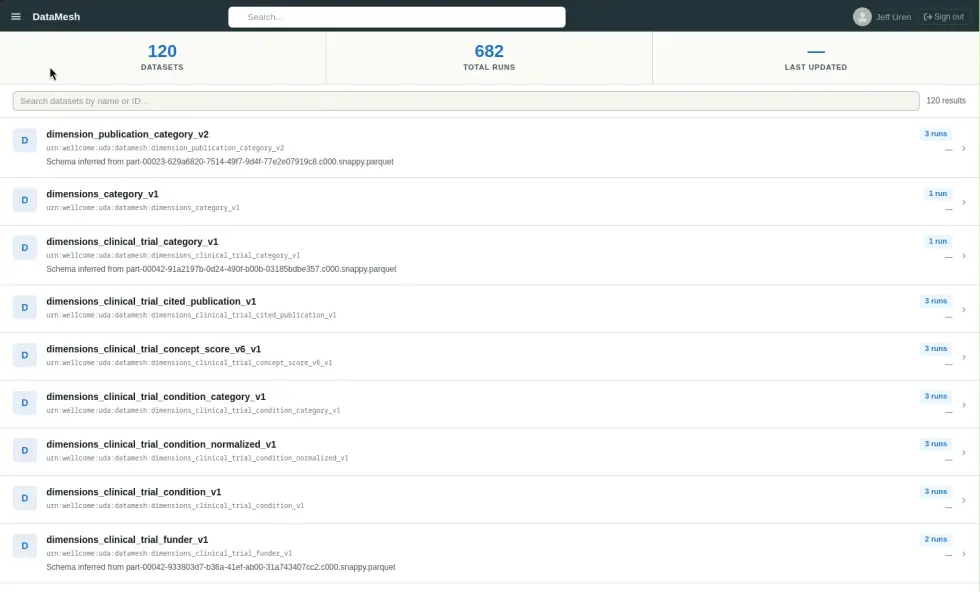
Sources
A Source in our upper ontology represents one of those concrete datasets in the DataMesh. It's not a Domain concept, it doesn't represent a meaningful organisational thing like a `Funded Grant` or `Organisation`. It just represents a stored set of values.
For example:
urn:wellcome:uda:datamesh:funding_records_v1That URN identifies a real dataset in the platform.
- The dataset exists
- It has a stable identifier
- It has fields
- It has types
- It has structure
- It has metadata
- It can be inspected
- It can be mapped to the concepts in our upper ontology
That's where the physical data platform starts to meet the ontology, but the Source itself is still only a container. The useful details is in the Fields.
Fields
A Field represents an individual value-bearing element inside of a Source. If a Source is roughly equivalent to a dataset, then a Field is roughly equivalent to a column, property, or named value inside the dataset.
For example:
urn:wellcome:uda:datamesh:funding_records_v1:grant_reference
urn:wellcome:uda:datamesh:funding_records_v1:awarded_amount
urn:wellcome:uda:datamesh:funding_records_v1:application_status
urn:wellcome:uda:datamesh:funding_records_v1:lead_organisation_idA Field has technical information attached to it, things like it's type, nullability, structure. Sometimes it has statistics, physical locality, and some information about it's originating system or pipeline.
Because we use storage formats like Parquet and Iceberg, a lot of this can be discovered automatically from the data itself, without a lot of complex, expensive processing or inference.
We're not asking someone to manually type out every field in a catalogue and then slowly watch it rot, or asking an LLM to curate for us because we can inspect the real datasets, read their schemas, and we can generate Source and Field representations in our ontology automatically which gives us a much stronger foundation than handwritten metadata.
But a Field still doesn't tell us enough on its own. A field called `amount` might be useful, but it's also might be a trap. Amount of what? Awarded Amount? Paid Amount? Refunded Amount? Committed Amount? Requested Amount? Local Currency? GBP? Original transaction currency?
A Field tells us where a recorded value lives, it doesn't tell us, by itself, what that value means. For that we need a Mapping.
Mappings
A Mapping connects the physical world of Sources and Fields to the conceptual world of DirectClasses, Attributes, Relationships, and Enumeration Values. It's a huge hinge that the whole system pivots on.
Our Mappings say:
This field, from this Source, represents this Attribute.
For example:
funding_records_v1:awarded_amount
maps to
FundedGrant.hasProperty(AwardedAmount)
funding_record_v1.application_status
maps to
ApplicationStatus Enumeration
funding_records_v1.lead_organisation_id
helps materialise
FundedGrant --hasLeadOrganisation--> OrganisationThis is where the system stops being a simple conceptual model and starts becoming operational machinery. The Mapping tells the platform how to interpret real data. It tells the query engine how to materialize values for concepts, generated APIs how to expose values, projections how to build analytical shapes, governance what sensitive concepts are represented in physical data, impact analysis what might break if a source field changes.
Without Mappings, the ontology and the data platform are two separate worlds unrelated across a vast gulf of uncertainty. With mappings they become one system.
Mapping is not just column labeling
It's tempting to think of Mapping as simply saying:
source_column = ontology_attribute
It's actually a lot more than that, because a DirectClass can be represented across multiple Sources. An Attribute could be computed from multiple different Fields, and a Relationship could be materialized through a bridge table.
Sometimes a source value needs to be normalized into an Enumeration Value.
Sometimes the same Field contributes to more than one concept.
Sometimes a Field looks useful but should not be mapped at all, because its meaning is too ambiguous or too source-specific.
This is why Mappings need to be explicit. They capture the judgement required to connect recorded values to organisational meaning. It's the place where we say:
This is what this value claims to represent.
This is the concept it belongs to.
This is how we should interpret it.
This is how it participates in the wider context.
What we end up with is something a million times more stronger than a catalogue of columns, we end up with traceability from meaning to storage, and from storage back to meaning.
Our upper ontology has grown:
UDA
├── Domain
│ ├── DirectClass
│ │ ├── hasProperty -> Attribute
│ │ └── hasRelationship -> DirectClass
│ │
│ ├── Attribute
│ │ └── mayUse -> Enumeration
│ │
│ ├── Enumeration
│ │ └── hasValue -> Enumeration Value
│ │
│ └── Relationship
│ ├── from -> DirectClass
│ └── to -> DirectClass
│
└── DataMesh
├── Source
│ └── hasField -> Field
│
├── Field
│ └── belongsTo -> Source
│
└── Mapping
├── mapsFrom -> Source / Field
├── mapsTo -> DirectClass / Attribute
├── mayMaterialise -> Relationship
└── mayNormaliseTo -> Enumeration ValueProjections
At this point we have the concepts.
We have DirectClasses, Attributes, Relationships, Enumerations, Domains, Sources, Fields, and Mappings. We have a way of saying what something means, where the recorded value lives, and how those values connect back to the meaning.
It's a really solid foundation, but foundations are not the thing you came to see. Sooner or later, someone needs an output.
A table. A data mart. An API. A GraphQL endpoint. A file. A push to another system. Some shape that another person, system, or application can actually use.
This is where Projections come in.
A Projection is what happens when we take meaning from the ontology and push it out into another shape.
We might start with a concept like `Funded Grant`. Then we might say we want its awarded amount, start date, status, lead organisation, and related transactions. We might want to follow relationships through the ontology. We might want to apply some transformations. The final result could be needed as a warehouse table, or as an endpoint for an application, or as a data mart for analysis.
The important part is that we are not starting from the storage. We're not starting with "which table do I join to which other table?".
We're starting with:
What meaning do I want to project?
The projection builder takes that definition and works out the machinery underneath. It uses the ontology, the mappings, the sources, and the fields to compute the queries needed to produce the shape. It runs those queries against the infrastructure, builds the output and carries the meaning and metadata along with it.
That last bit is really, really important.
A Projection is itself part of the ontology. It's not just an output sitting off to one side. It knows which DirectClasses it was built from. It knows which Attributes were selected. It knows which Relationships were followed. It knows which Sources and Fields contributed values. It knows which transformations were applied.
So we get a line of sight from input to output, not just a technical lineage, we can see how meaning moved through the system.
Projects become much more than generated tables, they become declared, repeatable, inspect-able components of the platform.
A Projection can be rebuilt. It can be versioned, it can be tested. It can be governed, it can be changed without losing the thread of what it was meant to represent. That's the beating heart of it.
The DirectClass is the thing we care about.
The Mapping connects that thing to real recorded values.
The Projection turns that meaning into a useful shape.
And because the Projection is still connected to the ontology, the shape doesn't become detached from the meaning that produced it.
Measures, Lenses, and Terms
The last few pieces to explain are Lenses, Measures, and Terms.
These aren't about bringing source data into the ontology. Sources, Fields, Mappings, and Projections do that work.
Lenses, Measures, and Terms are about how people use the ontology once the meaning is there.
They help us slice data, define metrics, and attach a wider organisational language to the concepts in the ontology.
Lenses
A Lens is a predefined way of slicing or grouping data.
A Lens doesn't belong to a Domain, it sits across the ontology and can be reused where it makes sense.
For example:
- By Geography
- By Time
- By Funding Scheme
- By Funding Round
A Lens can also drill into more specific Lenses.
By Geography
└── By Region
└── By Country
└── By MunicipalityAnd `By Time` might lead to:
By Time
└── By Financial Year
└── By Quarter
└── By MonthThe Lens itself describes the slicing idea.
It does not, on its own, explain how that slicing works for every concept in the ontology. That's where LensBindings come in.
A LensBinding connects a Lens to a specific DirectClass.
It says:
"When this Lens is used against this DirectClass, this is how it should be materialized"
For example, `By Geography` might be bound to `FundedGrant`. That binding would describe which Attributes or Relationships are used to work out the geography for a Funded Grant. Which is important because the same Lens could mean slightly different things depending on the concept they're attached to.
For a Funded Grant, geography could mean:
- The administering organisation's location
- The researcher's location
- The location where the funding activity takes place
- The address attached to the funded work
Those aren't interchangeable. So the LensBinding gives us somewhere to be explicit.
It can include disambiguation notes, things like:
For Funded Grants, geography may refer to the administering organisations' location, researcher location, or funded activity location.
That means users can slice data in useful ways without pretending the slicing is always simple.
Measures
A Measure is a concrete metric. Unlike a Lens, a Measure belongs to a Domain.
For example, in the Funding Domain, we might define Measures like:
- Applications
- Funded Grants
- Funding Spend
- Awarded Amount
- Number of Awards
A Measure describes something we want to count, sum, compare, trend, or otherwise analyze. But, as with a Lens, the Measure itself isn't really enough. We also need to know how that Measure is derived from the concepts in the ontology.
That's the job of a MeasureBinding. These connect a Measure to a DirectClass, and define how the Measure is derived from that DirectClass and its Attributes.
For example:
Measure: Funding Spend
DirectClass: Funded Grant
Derived from: Funded Grant -> Transactions -> Payment Amount
Measure: Applications
DirectClass: Application
Derived from: Count of Application instancesThe Measure belongs to the Domain because the Domain is where the meaning and ownership of that metric should live.
The MeasureBinding is what makes the metrics operational.
It tells the system how to calculate or derive the Measure from the ontology-backed data. Measures can also have caveats and disambiguation notes because metrics are rarely as obvious as their names suggest. `Funding Spend` might mean committed funding, awarded funding, actual payments made, recognized expenditure, or something else depending on the context.
The Measure definition describes the metric, the binding should describe how its derived. The caveats and disambiguation notes should explain the edges, assumptions, and traps.
Terms
Terms give us a way to attach a wider organisational language to the ontology. A Term is a definition, it can include criteria for when something is, or is not, covered by that term. These are hierarchical, in that they can be broader or narrower than other Terms.
For example:
Research Funding
└── Biomedical Research Funding
└── Infectious Disease Funding
Organisation
└── Administering Organisation
└── Partner Organisation
└── Research OrganisationThis lets us build a controlled vocabulary around the ontology that extend the available context around a concept.
A DirectClass might tell us that `FundedGrant` exists as a concept, but a Term can help explain how the organisation talks about funded grants, what related language is used, what broader or narrower ideas exist, and what criteria apply when deciding whether something fits that term.
That becomes super useful for discovery, documentation, governance, and AI-assisted exploration and it gives people the opportunity to connect the formal ontology components to the language that people actually use day to day.
Our upper ontology as it stands
Our baby has grown, exponentially, with types and relationships.
UDA
├── Conceptual Layer
│ ├── Domain
│ │ ├── owns -> DirectClass
│ │ ├── owns -> Attribute
│ │ ├── owns -> Enumeration
│ │ ├── owns -> Relationship
│ │ └── owns -> Measure
│ │
│ ├── DirectClass
│ │ ├── belongsTo -> Domain
│ │ ├── hasProperty -> Attribute
│ │ ├── hasRelationship -> DirectClass
│ │ ├── mayBeDescribedBy -> Term
│ │ ├── mayBeMeasuredBy -> MeasureBinding
│ │ └── mayBeSlicedBy -> LensBinding
│ │
│ ├── Attribute
│ │ ├── belongsTo -> Domain
│ │ ├── mayUse -> Enumeration
│ │ └── mayBeDescribedBy -> Term
│ │
│ ├── Relationship
│ │ ├── belongsTo -> Domain
│ │ ├── from -> DirectClass
│ │ ├── to -> DirectClass
│ │ └── mayBeDescribedBy -> Term
│ │
│ ├── Enumeration
│ │ ├── belongsTo -> Domain
│ │ ├── hasValue -> EnumerationValue
│ │ └── mayBeDescribedBy -> Term
│ │
│ └── EnumerationValue
│ ├── belongsTo -> Enumeration
│ └── mayBeDescribedBy -> Term
│
├── Physical Layer
│ └── DataMesh
│ ├── Source
│ │ ├── hasField -> Field
│ │ └── mayFeed -> Projection
│ │
│ └── Field
│ ├── belongsTo -> Source
│ └── mayMapTo -> DirectClass / Attribute / Relationship / EnumerationValue
│
├── Semantic Bridge
│ └── Mapping
│ ├── mapsFrom -> Source / Field
│ ├── mapsTo -> DirectClass / Attribute
│ ├── mayMaterialise -> Relationship
│ ├── mayNormaliseTo -> EnumerationValue
│ └── mayFeed -> Projection
│
├── Projection Layer
│ └── Projection
│ ├── selects -> DirectClass
│ ├── selects -> Attribute
│ ├── follows -> Relationship
│ ├── uses -> Mapping
│ ├── applies -> Transformation
│ ├── produces -> Output
│ └── carries -> Meaning / Metadata / Lineage
│
├── Analytical Layer
│ ├── Lens
│ │ ├── drillsTo -> Lens
│ │ └── hasBinding -> LensBinding
│ │
│ ├── LensBinding
│ │ ├── binds -> Lens
│ │ ├── to -> DirectClass
│ │ ├── materialisedBy -> Attribute / Relationship
│ │ ├── mayHave -> Caveat
│ │ └── mayHave -> DisambiguationNote
│ │
│ ├── Measure
│ │ ├── belongsTo -> Domain
│ │ ├── hasBinding -> MeasureBinding
│ │ ├── mayHave -> Caveat
│ │ └── mayHave -> DisambiguationNote
│ │
│ └── MeasureBinding
│ ├── binds -> Measure
│ ├── to -> DirectClass
│ ├── derivedFrom -> Attribute / Relationship
│ ├── mayUse -> Transformation
│ ├── mayHave -> Caveat
│ └── mayHave -> DisambiguationNote
│
└── Vocabulary Layer
└── Term
├── broaderThan -> Term
├── narrowerThan -> Term
├── relatedTo -> Term
├── describes -> DirectClass
├── describes -> Attribute
├── describes -> Relationship
├── describes -> Enumeration
├── describes -> EnumerationValue
└── mayDefine -> CriteriaPretty crazy how fast it accumulates, and also how small it really is conceptually, but enables an immense amount of capability.
Where does it go from there?
Once the UDA (Upper Data Architecture) becomes operational, it starts unlocking capabilities that are very hard to build from ordinary metadata alone. We load this entire ontology into a graph database, and we can start to query it, inspect it, refine it, and update it to align with Wellcomes meaning and it's needs.
That enables a whole host of things that are currently operationally hard.
Discovery
People don't need to know the name of a table, bucket, file, or database to find data. They can just start with the language of the organisation.
- "Funded Grants"
- "Applications"
- "Payments"
- "People"
- "Organisations"
- "Climate and health funding"
The ontology gives us a way to navigate from human concepts to physical data, instead of thinking databases, files, schemas and tables first, you think about what you actually want, what meaning you're looking for.
Governance
Governance becomes much stronger when it attaches to meaning rather than storage.
If a field represents a person, a payment, a grant, a health-related topic, or a sensitive organisational attribute, that should be known at the semantic layer and because of the inter-connected graph nature of the ontology, it can propagate outward from the meaning to the physical data, and to every downstream projection, report, dashboard, and API.
Otherwise every downstream table, extract, report, notebook, and dashboard has to rediscover all the governance risk for itself and that's not governance, that's hope with a spreadsheet.
We can roll up and out information and meaning, an Attribute marked as highly sensitive will cause it's DirectClasses using it to be marked as sensitive, and any projections using that Attribute will be sensitive as well, and any source system data feeding that Attribute will also be sensitive.
Same with permissions, ownership, and any other governance information we want to attach to the ontology. It can propagate through the graph and be used to inform and even enforce controls downstream and upstream from the graph.
Change impact
When a source changes, we can ask:
"What does this break?"
Not in a vague emotional sense, though there's usually plenty of that.
In a much more concrete sense:
- which Fields changed?
- which Mappings depend on them?
- which DirectClasses and Attributes are affected?
- which Projections need to be regenerated?
- which reports, dashboards, APIs, or users may be impacted?
When a change is coming we can immediately see the impact that change will have across the rest of the platform, which is an immense amount of planning capability for handling and mitigating the effects of change in a sustainable way across data and the systems that rely on it.
Without it, change impact analysis is basically archeology. Someone goes digging through SQL, old tickets, Slack messages, dashboards, and half-remembered conversations trying to work out why something exists.
That's just a bad way to run a platform.
Quality
Earlier, I said quality is really a question of correspondence.
How well does the recorded value match the real-world state it claims to represent? The ontology helps us make that question explicit in that we can attach data quality rules to the concepts in the ontology, and those rules can be applied to the recorded values that are mapped to those concepts. Everyone can contribute to this, and everyone can see the rules and the results of those rules.
A value isn't just "wrong" in isolation. It's wrong relative to what it claims to represent. If we know that a field represents Awarded Amount for a Funded Grant, then we can define quality checks that make sense for that concept.
We can ask whether the value is missing, stale, negative, inconsistent with related transactions, inconsistent with application status, inconsistent with finance records, or inconsistent with the lifecycle of a grant.
That is way richer than simply checking whether a column is null-able or numeric.
Consensus on meaning
The ontology gives us a place to build consensus around meaning, where that meaning is actionable as a result.
Instead of a dictionary of terms and ideas collecting dust, slowly drifting out of date, and becoming a source of confusion. The operational nature of the ontology means that in order to understand and analyse our organisation the meaning has to be understood, and to keep understanding it that meaning has to be maintained.
This saves us from the critical failing of all documentation systems. That is, that they're not used, and if they're not used, they don't get maintained, and if they don't get maintained, they become wrong, and if they're wrong, they become dangerous.
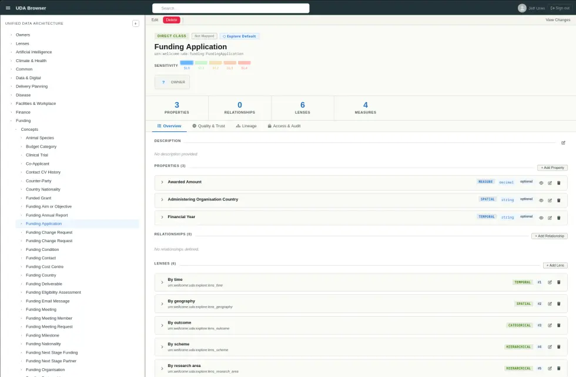
Lineage as an axial point
The ontology gives us a way to connect meaning to recorded values, and recorded values to meaning. That means we can trace the lineage of a value from the physical data, up through our pipelines and transformations, through to the DataMesh, through the Mappings, through the DirectClasses and Attributes, and back to the meaning that those values claim to represent.
That's like a super-power.
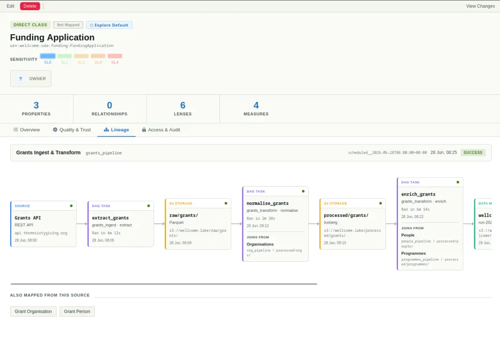
Access and permissions
Coupled with an IAM system, the ontology gives us a way to attach access and permissions to meaning rather than storage, but allows us to propagate that access and those permissions through the graph up to the physical data, and down to the projections, reports, dashboards, and APIs that rely on that data.
From a governance perspective, you can literally visualize the entirety of what a single person can touch in the platform, using the URN-based identifiers of the ontology we can grant and restrict access to concepts, attributes, relationships, enumerations, and projections without having to know the name of the underlying tables, files, or buckets.
We can use wildcard patterns to grant access to groups of concepts, or to restrict access to a single concept, and we can propagate those permissions through the graph to everywhere else.
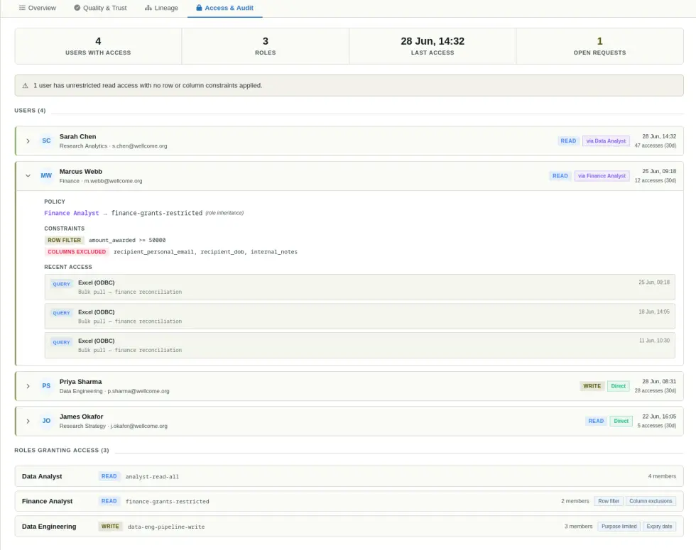
Reuse
When Attributes are defined once and reused across DirectClasses, we avoid creating dozens of subtly different meanings for the same organizational idea.
We don't need one Grant ID for every single table, we don't need ten versions of Awarded Amount for every single table either, or for every team to invent its own definition of Organisation, Person, Application, Award, Project, or Payment.
The ontology gives us a shared semantic vocabulary.
That doesn't mean everything becomes centrally controlled or painfully bureaucratic either, it should mean we have a place where meaning can accumulate, get challenged, trigger arguments, be improved, and be reused.
Self-Service Analytics
Because of Lenses, Metrics, and the way Projections can be generated, we can give people, even non-technical people, the ability to explore data in a way that's grounded in meaning rather than storage.
You can answer questions like:
"How many Funded Grants were awarded in 2023, by Funding Scheme, and how much was spent on them?"
"How many Applications were submitted by Research Organisations in the last five years, and how many of those Applications were successful?"
"How many Payments were made to Partner Organisations in the last quarter, and how many of those Payments were related to Climate and Health funding?"
These become easy questions to answer, that don't require an analyst, a data engineer, or a data scientist to go spelunking through the warehouse. The ontology gives us a way to express the question in terms of meaning, and the system can work out the storage, the joins, the transformations, and the output shape needed to answer it.
That's a humongous shift in how people can interact with data, and it opens up a lot of possibilities for self-service analytics, exploration, and discovery.
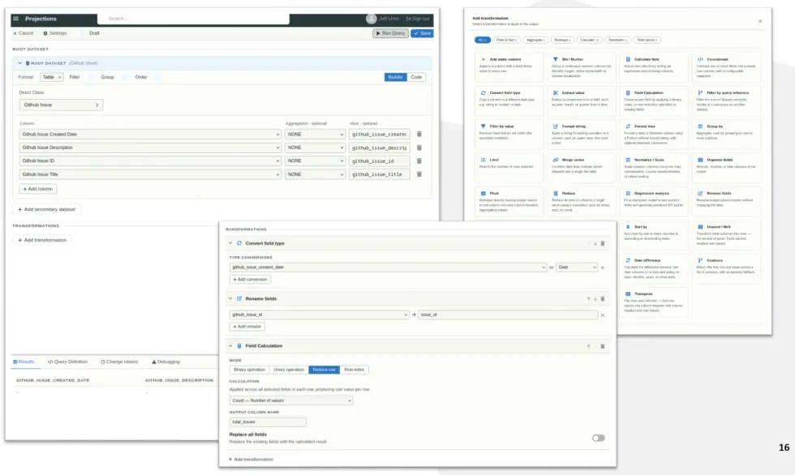
Integration Spine
One of the quieter benefits of the ontology, datamesh and UDA is that it gives us the beginning of an integration spine.
Most organisations accumulate point-to-point integrations over time. One system talks directly to another system. Then another. Then another. A report needs a feed, a finance process needs an export. A workflow needs a synchronization job. Before long, the organization is held together by a web of bespoke integrations, each with its own assumptions, mappings, schedules, edge cases, and failure modes. Wellcome is not immune to this.
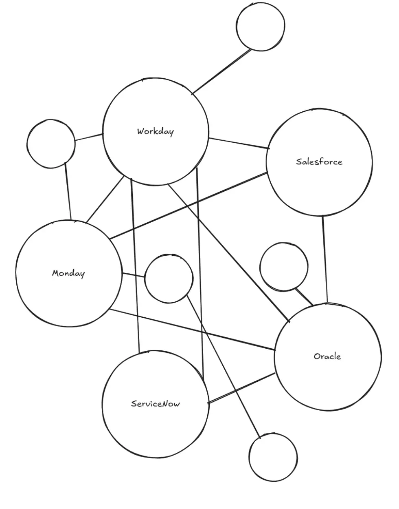
That gets expensive. It takes time to change, it makes impact difficult to understand, creates hidden dependencies between systems that were never really designed to know about each other. And every new integration has to rediscover the same questions: what does this field mean, where should it go, what does this status represent, which identifier is authoritative, what happens when the source changes?
The UDA and DataMesh gives us a better center of gravity. Because we have stable, agreed concepts, and because we already map source system data into those concepts, integration doesn't always need to mean wiring one system directly to another. Systems can integrate through meaning. A source system can feed the UDA, and a consuming system can take what it needs from the UDA. The agreed concept sits in the middle as the contract.
That doesn't remove the hard work of integration. It makes the hard work more reusable, we stop solving the same semantic problems over and over again at the edges of every system, and start solving them once in the spine of the platform.
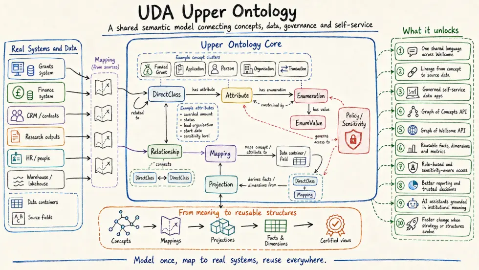
Less Traumatic and Expensive Change
This also makes change less traumatic.
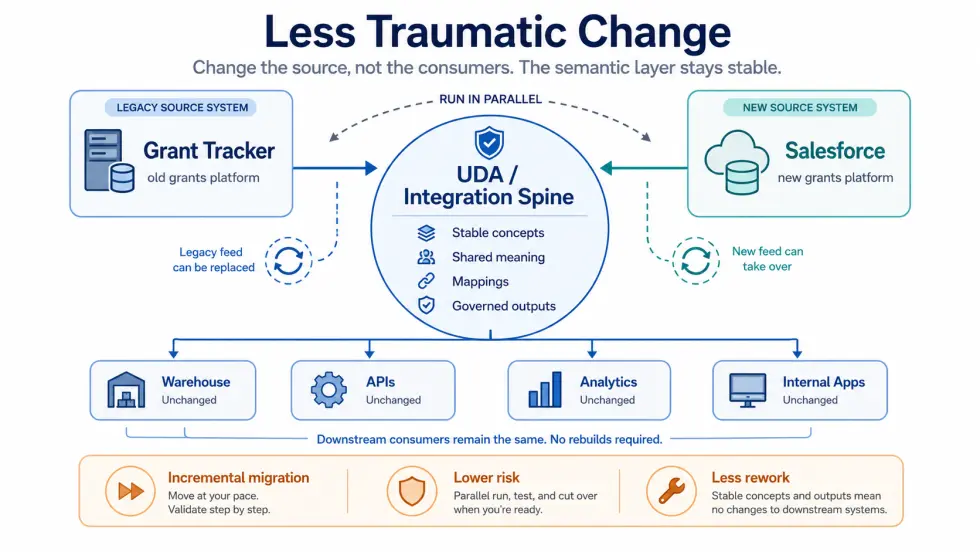
When integrations are point-to-point, replacing a system can become a sprawling exercise in fear management. Every downstream feed, report, process, dashboard, extract, and dependent system has to be discovered, understood, rebuilt, tested, and moved. The old system is not just a system anymore. It's part of the organisations nervous system.
With the UDA acting as an integration spine, we get a useful layer of abstraction. The concept does not have to change just because the source system changes. A Funded Grant is still a Funded Grant. An Organisation is still an Organisation. A Payment is still a Payment. What changes is the thing feeding values into those concepts.
That means migration can become more incremental. We can move sources, rebuild mappings, compare old and new feeds, run systems in parallel, and shift consumers over without forcing every part of the organisation to absorb the full blast of change at once. The UDA becomes a bridging mechanism: stable meaning above, replaceable machinery below.
AI
This is where things get pretty interesting.
The naive approach to AI is to throw a large language model at a problem and hope it works. In a data system, that means wrangling table schemas, and patching holes in the LLMs understanding to try and get it to operationalize data correctly. AI can only really work well with a strong foundation.
It might mean building custom MCPs where you load lots of context, but that's no different than siloing knowledge into a model, or a dashboard and hoping it works. The meaning is still disconnected from the data, and the model is still free to invent meaning where meaning has already been defined.
AI systems are very good at producing plausible answers, and that is not the same thing as producing grounded answers.
If we want AI to help people explore organisational data, we can't simply point it at a warehouse and hope for the best. That's naive at best, extremely dangerous at worst.
The model needs context.
It needs to know what concepts exist, which attributes describe them, where values come from, which joins are meaningful, which fields are sensitive, which terms are synonyms, and which projections are safe to use.
That's exactly the kind of context the ontology can provide, it becomes a grounding layer for AI-assisted analysis.
It doesn't automatically (and magically) make AI correct, but it gives AI less room to invent meaning where meaning has already been defined.
Graph of concepts
As part of this, we have a GraphQL API that exposes the ontology as a graph of concepts. That means we can explore the ontology as a graph, and we can use that graph to explore the relationships between concepts, attributes, enumerations, and more.
This feeds us up into something even more interesting, which is the ability to layer that ontology on top of the data mesh and explore it in meaningful ways.
Graph of Wellcome
The ontology is not just a graph of concepts, it's a graph of Wellcome. It connects the concepts to the real data, to the real fields, to the real mappings.
That enables us to do things like look at a Funded Grant, see its awarded amount, see the transactions that contributed to that amount, see the lead organisation, drill to the applications that produced the grant, and see the people involved in those applications.
Not only that, with slowly-changing dimensions we can view the organisation at specific points in time. We can compare the world of Wellcome as it was in 2020, to the world of Wellcome in 2026, and see how we've changed, how our funding has changed, how our people, organisation, and grant holders have changed.
The big take-away
The important thing about all this isn't that it's an ontology, or that it was originally conceived in RDF, or that there's a graph database behind it, or that it has a web interface, or that it can generate projections. All of this is starting to come into reach, through hard graft, a lot of research and experimentation to find something that works for Wellcome. Not something that we can necessarily buy off the shelf, or that puts us into a square peg, round hole situation. But something purpose-built, that aligns with our values, our mission and our needs, now, and 2, 3, 5, 10 years from now. Something that we can evolve alongside us.
The important bits are:
- It's connected to real sources
- It's connected to real fields
- It's connected to mappings
- It's connected to generated projections
- It's connected to governance
- It's connected to the way we actually build and run the data platform
That's what makes it valuable, otherwise it would just be another diagram, and we've all seen enough diagrams at this point and I've produced enough of them in this article alone.
For a long time, a lot of this work has looked like foundations, or has been going on behind the scenes.
- Ontology work
- Mapping work
- Storage formats
- Source modelling
- Query engines
- Generated projections
- APIs
- Governance structures
All the un-glamorous stuff that sits below the waterline has been happening, for over a year.
That's platform work though, If it's done properly, most people don't see the awkward machinery underneath. They see the thing that becomes possible because the machinery exists.
We are now getting to that point.
Applications are in active development that build directly on top of the UDA (you've seen glimpses of the above), the query engine, and the generated APIs. Those applications will soon start moving into staging, where people will be able to see, test, challenge, and use some of what this platform has been designed to make possible.
This is a big moment. For our team, for Wellcome on the whole.
It means this is no longer just an architectural idea, or just a model, just something living in diagrams, code, mappings, and slightly overlong explanations from me. It means the stacks of notebooks (12 to be exact), and articles, and diagrams, and code, and mappings, and hard discussions, arguments, and decisions are starting to produce something that can be used, explored, and tested.
It's moving into position to become a working surface for the organisation.
But this is also the point where we need people to pile in.
To make this all real, we need analysts, engineers, data specialists, domain experts, product people, governance people, and curious troublemakers to help shape it.
- We need people to test the concepts.
- We need people to challenge the definitions.
- We need people to ask awkward questions.
- We need people to tell us where the model does not match reality.
- We need people to help describe the concepts that matter in their part of Wellcome.
- We need people to help us work out which relationships are useful, which attributes are missing, which terms are confusing, and which projections would make actual work easier.
The UDA only becomes valuable if it reflects the organisation well enough to be useful and we can't do that alone.
Our main job is to build the machinery, keep it running, connect it to real data, and make the concepts operational. But the meaning has to come from the organisation.
So this is the invitation.
If you care about how Wellcome understands its data, how people find it, how we govern it, how we query it, how we build applications on top of it, or how we prepare ourselves for AI-assisted analysis, then this is the moment to get involved.
Come and kick the tyres.
Find the gaps.
Break the assumptions.
Tell us where the language is wrong.
Help us make it better.
Because the foundations are now starting to do what foundations are supposed to do.
They are starting to hold something up.
More Information
If all this stuff is really interesting to you, I've compiled a set of resources and links to help you explore more of what the foundational pieces of this are made up of. And if you have questions, my door is always open!
W3C RDF / OWL & Ontologies
- https://www.w3.org/RDF/ — RDF Spec
- https://www.w3.org/TR/rdf12-concepts/ — RDF Concepts
- https://www.w3.org/OWL/ — OWL Ontology
- https://basic-formal-ontology.org/ — BFO Ontology
- https://iptc.org/thirdparty/foaf/ — FOAF Ontology
Concepts
- https://en.wikipedia.org/wiki/Metamodeling — Metamodeling
- https://en.wikipedia.org/wiki/Data_integration — Data Integration
- https://en.wikipedia.org/wiki/Semantic_integration — Semantic Integration
- https://en.wikipedia.org/wiki/Upper_ontology — Upper Ontologies
- https://en.wikipedia.org/wiki/Semantic_interoperability — Semantic Interoperability
- https://en.wikipedia.org/wiki/Conceptualization_(information_science) — Conceptualization
- https://www.w3.org/2001/sw/wiki/Linking_patterns — Linking Patterns
- https://tomgruber.org/writing/onto-design.pdf#page=4 — Monotonic Contribution
- https://en.wikipedia.org/wiki/Conservative_extension — Law of Conservative Extension
- https://en.wikipedia.org/wiki/Knowledge_representation_and_reasoning — Knowledge representation and reasoning
Core ontology / semantic data platform papers
- Ontology-Based Data Management — Maurizio Lenzerini
- Ontology-Based Data Access: A Survey — Guohui Xiao et al.
- Ontology-Based Data Access and Integration — Diego Calvanese et al.
- Answering SPARQL Queries over Relational Databases
- The Virtual Knowledge Graph System Ontop — Guohui Xiao et al.
- Mapping Patterns for Virtual Knowledge Graphs — Diego Calvanese et al.
- Relational Database to RDF Mapping Patterns — Juan Sequeda et al.
- R2RML and RML Comparison for RDF Generation, Rules Validation and Inconsistency Resolution — Anastasia Dimou
Knowledge graphs and semantic data management
- Knowledge Graphs — Aidan Hogan et al.
- A Survey on Knowledge Graphs: Representation, Acquisition and Applications — Shaoxiong Ji et al.
- Ontologies for Knowledge Graphs? — Markus Krötzsch
- Semantic Data Management in Data Lakes — Sayed Hoseini, Johannes Theissen-Lipp, Christoph Quix
- Using Semantic Technologies to Manage a Data Lake: Data Catalog, Provenance and Access Control — Hanna Dibowski et al.
- Using Knowledge Graphs to Manage a Data Lake — Hanna Dibowski et al.
- Enriching Data Lakes with Knowledge Graphs — Andrea Chessa et al.
- Metadata Systems for Data Lakes: Models and Features — Pegdwendé Sawadogo et al.
FAIR, data mesh, and data platform governance
- The FAIR Guiding Principles for Scientific Data Management and Stewardship — Mark D. Wilkinson et al.
- Data Mesh: Concepts and Principles of a Paradigm Shift in Data Architectures — Ivo A. Machado et al.
- Data Mesh: A Systematic Gray Literature Review — Abel Goedegebuure et al.
- Ten Pillars for Data Meshes — Robert L. Grossman et al.
Biomedical / science-domain semantic platforms
- The EBI RDF Platform: Linked Open Data for the Life Sciences — Simon Jupp et al.
- Open Targets: A Platform for Therapeutic Target Identification and Validation — Gabriela Koscielny et al.
- The Next-Generation Open Targets Platform: Reimagined, Redesigned, Rebuilt — David Ochoa et al.
- Biolink Model: A Universal Schema for Knowledge Graphs in Clinical, Biomedical, and Translational Science — Deepak R. Unni et al.
- KG-Hub: Building and Exchanging Biological Knowledge Graphs — J. Harry Caufield et al.
- Announcing the Biomedical Data Translator: Initial Public Release — Karamarie Fecho et al.
AI / knowledge graph grounding
- Retrieval-Augmented Generation for Knowledge-Intensive NLP Tasks — Patrick Lewis et al.
- From Local to Global: A Graph RAG Approach to Query-Focused Summarization — Darren Edge et al.
- Unifying Large Language Models and Knowledge Graphs: A Roadmap — Shirui Pan et al.
- A Survey of Graph Retrieval-Augmented Generation for Customized Large Language Models — Qinggang Zhang et al.
_ J